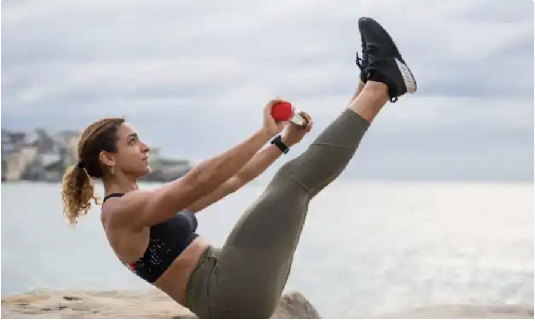
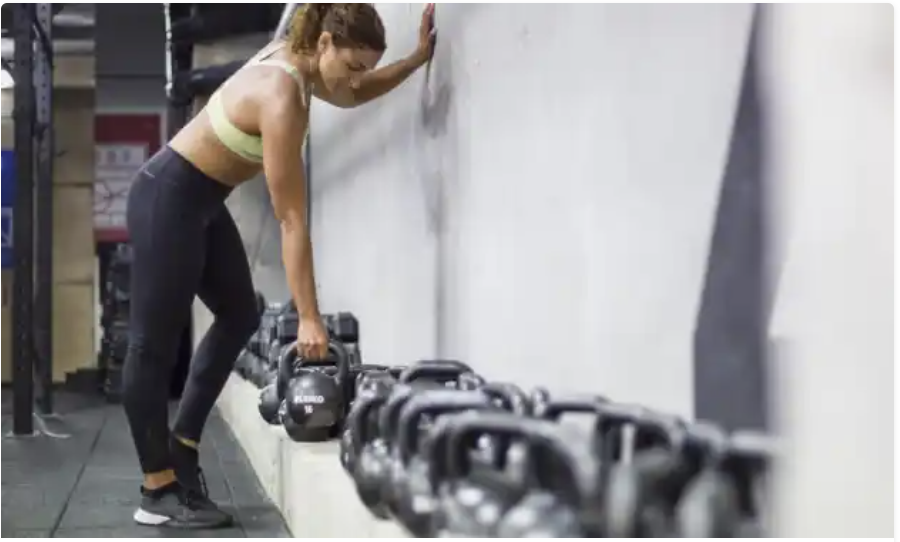

|
|
NUTRITION : ET SI ON ARRÊTAIT D’EN FAIRE TOUT UN PLAT ?
9 Juil, 2020 | NUTRITION
Nutrition : et si on arrêtait d’en faire tout un plat ? Hi 🙂 Régime Vegétarien. Vegan....
|
VALORISER LA PROGRESSION, NON LA PERFECTION
30 Juin, 2020 | TRAINING, VIE DE COACH
VALORISER la progression, non la perfection Hi 🙂 Je suis la première à le dire pendant...
|
CALORIES, ÉNERGIE, MÉTABOLISME… KESAKO ?
5 Avr, 2020 | NUTRITION
CALORIES, ENERGIE, METABOLISME. KESAKO? Hi 🙂 A l’heure du confinement et, admettons-le, de la...
|
LE RETOUR DE SWEAT & SHARE, AVEC MÉDECINS DU MONDE
27 Mar, 2020 | TRAINING
le retour des sessions SWEAT & SHARE, avec Médecins du monde Hi 🙂 En 2018, je lançais le concept...
|

3 ÉQUIPEMENTS POUR S’ENTRAÎNER CHEZ SOI
24 Mar, 2020 | TRAINING
3 EQUIPEMENTS POUR S'enTRAîNER CHEZ SOI Hi 🙂 Me voici de retour d’Australie (depuis déjà 2...
|
RENFORCER SA VOÛTE PLANTAIRE
16 Déc, 2019 | RÉCUPÉRATION, RUNNING
Renforcer sa voûte plantaire Hi 🙂 Quand on veut se muscler, on se focalise la plupart du temps sur...
|
COACHING : L’ART DE CORRIGER
5 Déc, 2019 | TRAINING, VIE DE COACH
Coaching : l'art de corriger Hi 🙂 S’il y a une chose frustrante pour un coach, c’est de ne pas...
|
JE RACONTE… L’EXAMEN STRONGFIRST SFG LEVEL 1
24 Nov, 2019 | TRAINING, VIE DE COACH
Je raconte... l’examen Strongfirst SFG Level 1 Hi 🙂 Le 6 novembre dernier, je me rendais à Perth..
|

MON PROCHAIN DÉFI : L’EXAMEN D’INSTRUCTEUR STRONGFIRST
13 Juin, 2019 | VIE DE COACH
Mon prochain défi : l'examen d'instructeur Strongfirst Hi 🙂 Vous le savez certainement déjà : la...
|
BILAN DE MES 3 MOIS À SYDNEY
3 Juin, 2019 | TRAINING
Mes 3 mois à Sydney Hi 🙂 Déjà 3 mois que j’ai embarqué direction Sydney, sans trop savoir ce qui...
|
|
Bienvenue
Bienvenue sur My Training Diary, le blog destiné à tous les passionnés de Training, amateurs ou professionnels, débutants comme confirmés. J’y partage mon quotidien de sportive et mes conseils de Personal Trainer, mais aussi les rencontres et les découvertes qui font chaque jour grandir ma passion pour le Training.
FACEBOOK

MY TRAINING TRIP
Découvrez My Training Trip, le 1er guide touristique 100% sport, dont la sortie est prévue pour novembre 2016. En savoir plus...
TRAIN & PLAY

TAGS
|

 TRAIN & PLAY
MY TRAINING TRIP
À PROPOS
CONTACT
TRAIN & PLAY
MY TRAINING TRIP
À PROPOS
CONTACT